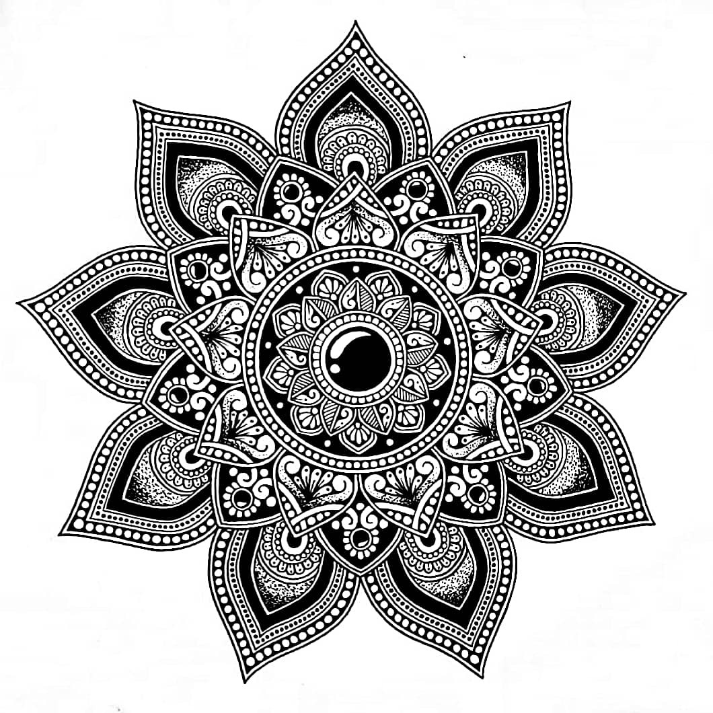
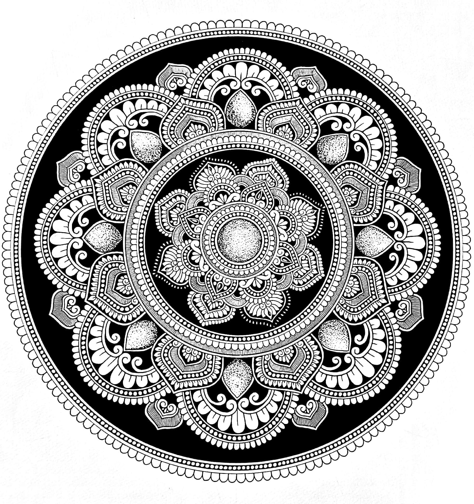
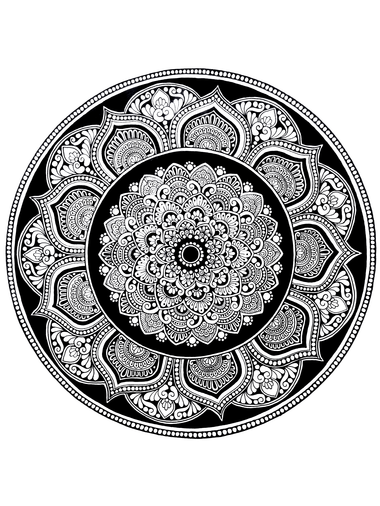
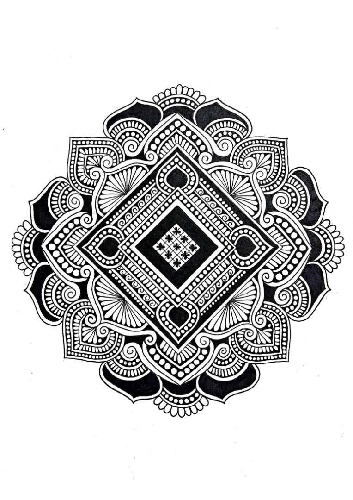

I’ve liked art for as long as I can remember. During covid, I started drawing mandalas, mostly just to pass time. It stayed with me, and I’m glad it did. All the work below is original.

This is probably my favourite one. It took me around two weeks to make this as fine as possible :)





Spent about 12 hours on this, worked on it in one go.

I am very proud of this one!